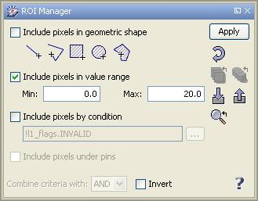
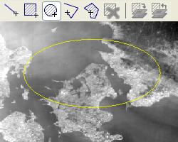
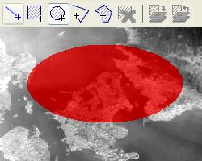

| Shapes and ROIs (Regions of Interest) | |
When looking at satellite data image, you might be interested in a special region inside the image. This region of interest (ROI) does not have to be contiguous area of pixels; a ROI is allowed to be any number of independent pixels inside the data.
VISAT lets you define four different criteria for the definition of the ROI. Use can use a geometric shapes which you can simply draw on the image, include the pixels within a value range, covered by a bitmask and finally the pixels selected by the currently defined pins. The combination of one or more of these criteria offers a great flexibility to select pixels that show the features you are interested in.
All that can be done in one dialog, the ROI Definition Window.

To illustrate the available options in this dialog, they have all been activated.
Let's have a little closer look on this example.
This ROI will be assembled from four criteria
If you want to start over defining a ROI, click on the
 icon.
This will reset the dialog box to default values: all criteria deselected, value
range (disabled) from 0.0 to 1.0, bitmask criterion (disabled) erased.
icon.
This will reset the dialog box to default values: all criteria deselected, value
range (disabled) from 0.0 to 1.0, bitmask criterion (disabled) erased.
You can assign the current ROI definition to multiple other visible bands
of the selected product by clicking the  icon.
This will open a band chooser dialog where the bands can be selected. By pressing the OK
button the current ROI will be assigned to all selected bands.
icon.
This will open a band chooser dialog where the bands can be selected. By pressing the OK
button the current ROI will be assigned to all selected bands.
A click on the  icon in the centers the image view on the selected ROI.
icon in the centers the image view on the selected ROI.
The creation of ROIs from shapes in VISAT includes two steps:
In VISAT you define geometric areas by drawing them into your image. For this
purpose, several drawing tools are available.
The following figures show the necessary steps to create a ROI graphically:
|
 Draw the shape (e.g. an ellipse): |
 Assign Shape as ROI: |
Once the ROI is created, you will be able to gather information about the affected pixels in various dialogs. The Statistics, Histogram, and Scatter Plot dialogs will have an active 'Compute for ROI' button then.
The following tools help to draw geometric shapes.
Note: Tf you want to add a shape to an existing shape, hold down the Shift key.
To subtract a shape from an existing one, hold down the Control key.
If you don't press one of these keys while drawing a shape, the new shape will replace
any existing one.